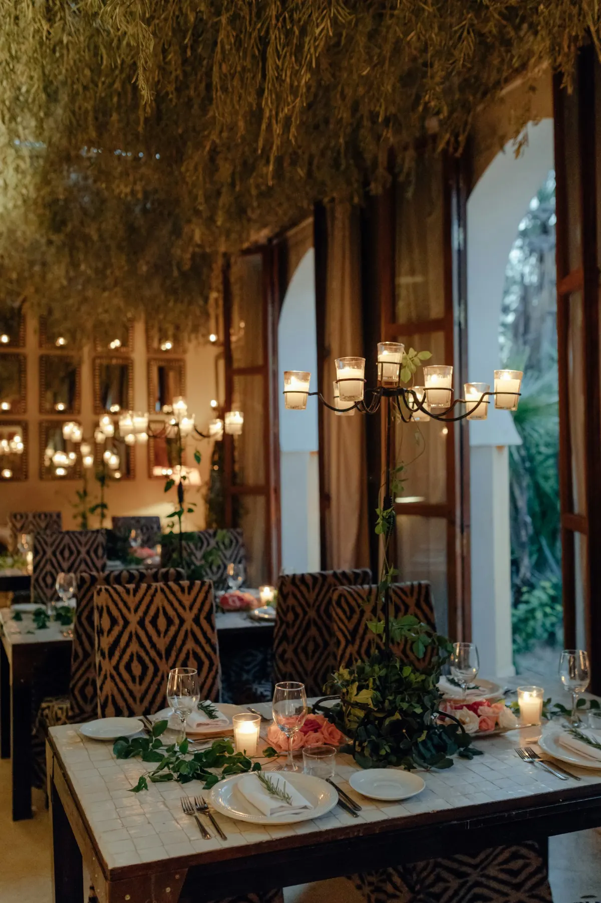
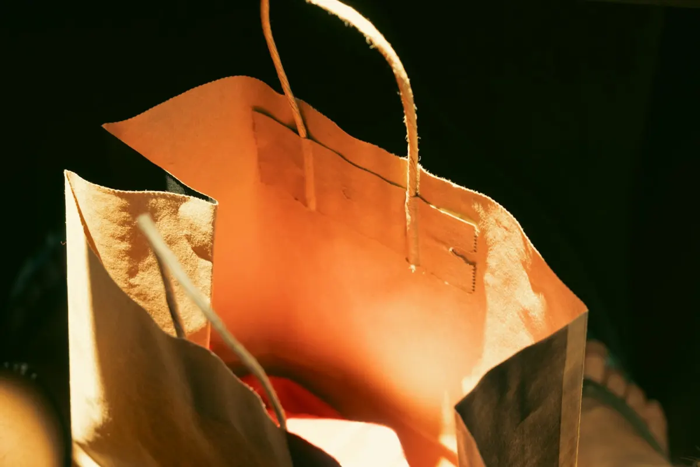
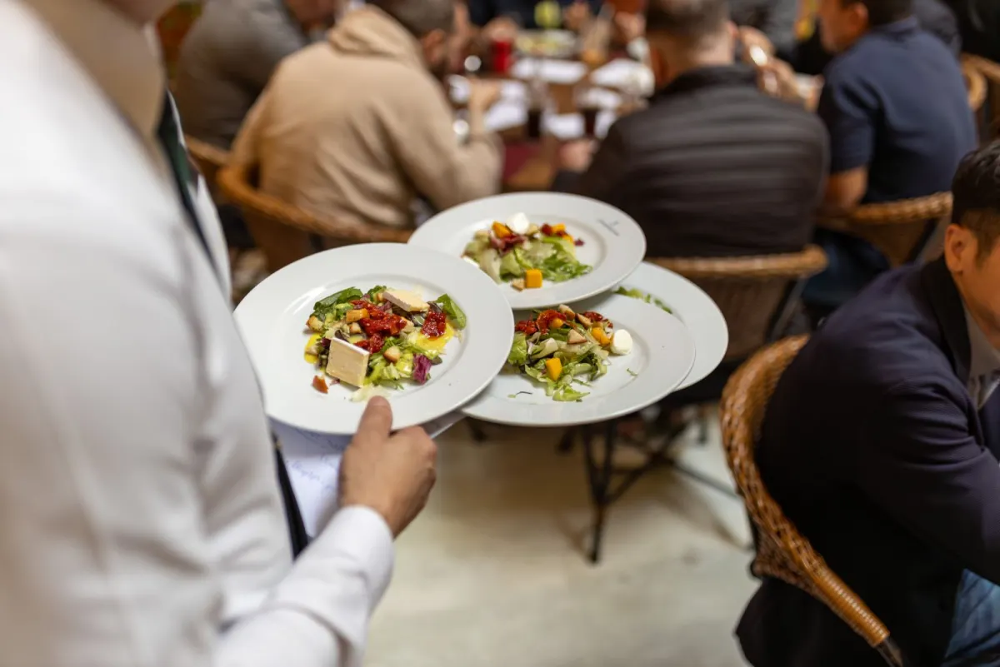
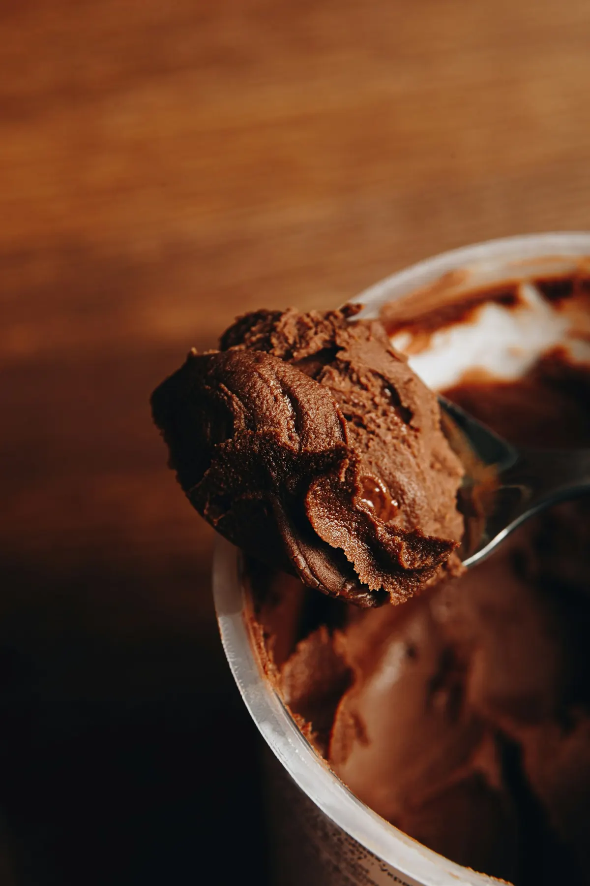
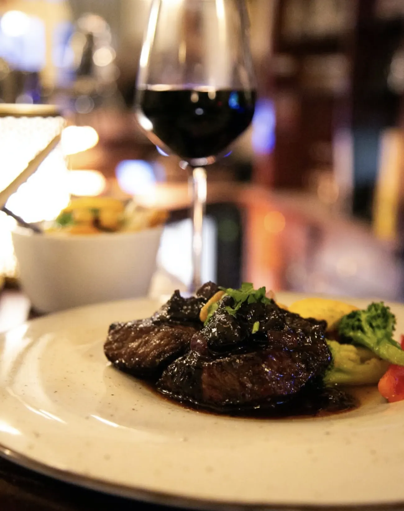
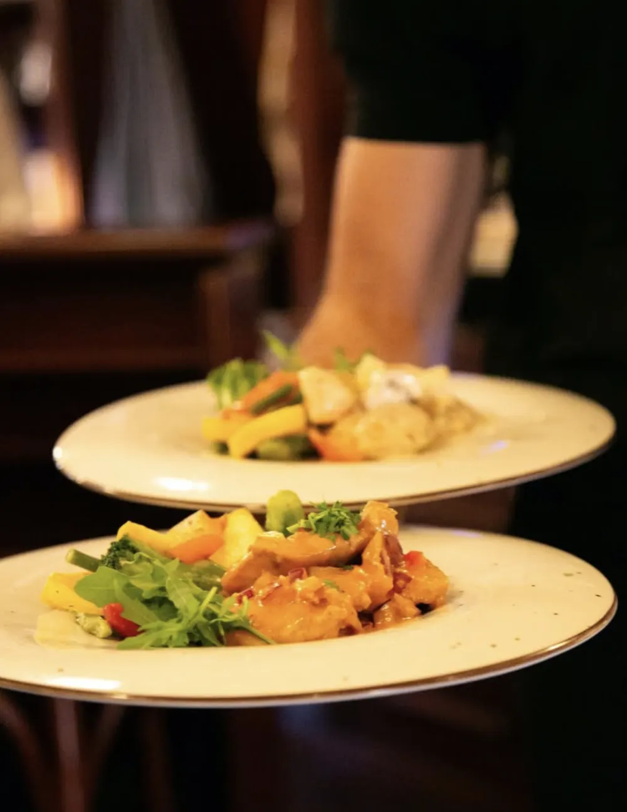
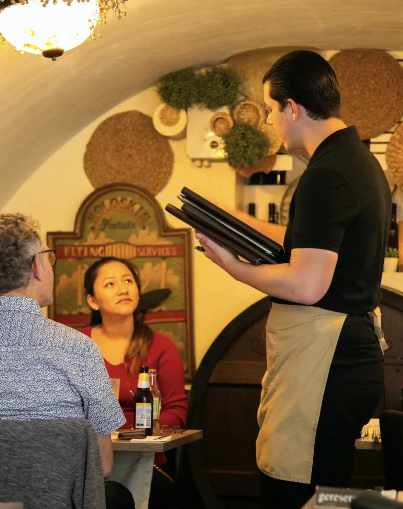
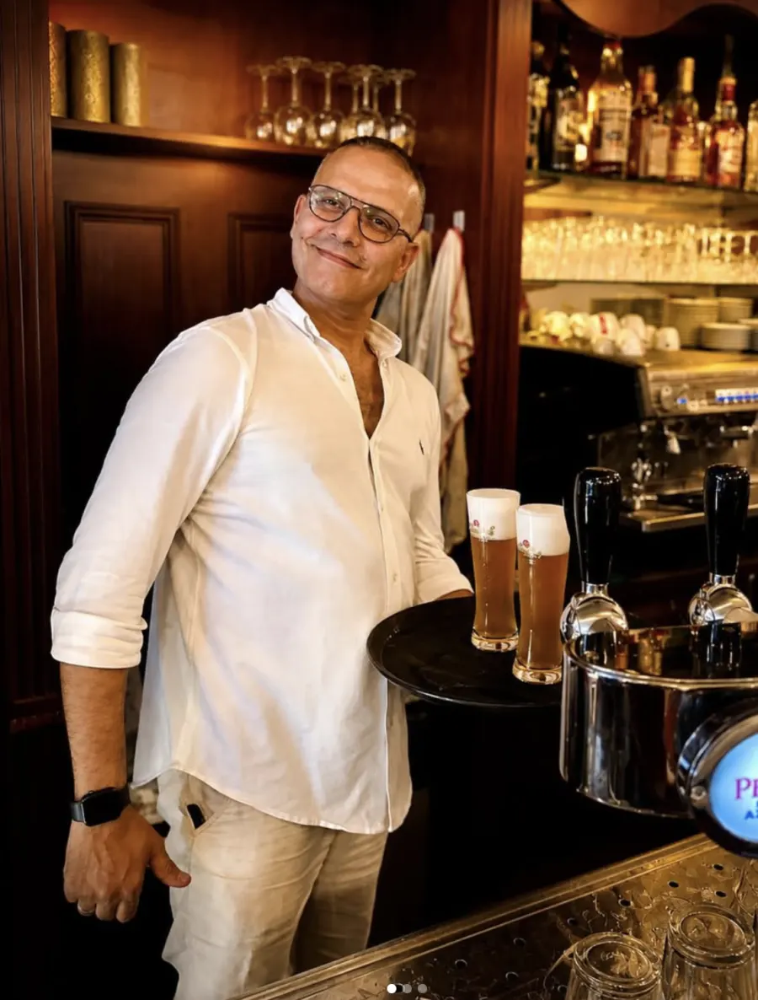
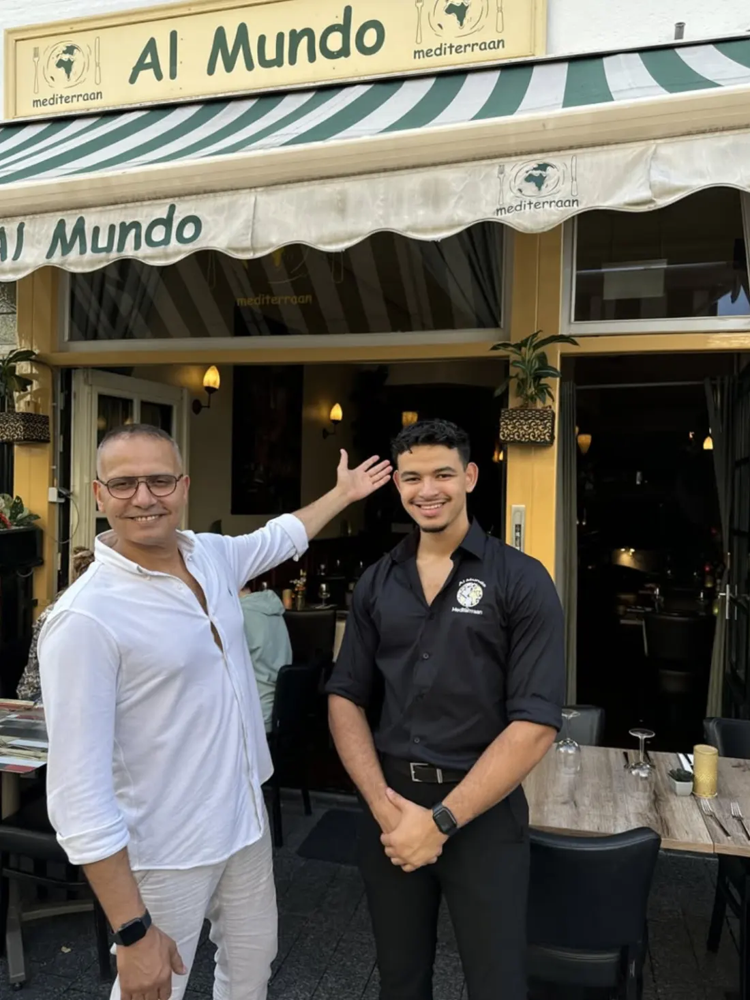
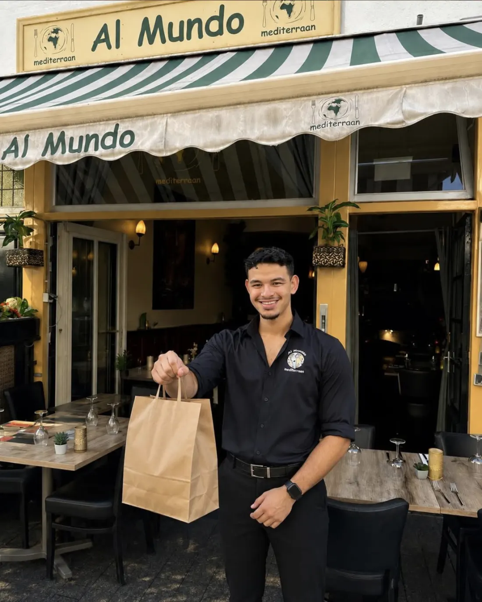

Your table, sorted in a minute
Confirmed online straight away, so you never wait for a call back.
3 courses for the price of 2
À la carte, except on public holidays

Confirmed online straight away, so you never wait for a call back.

Collect between 16.00 and 20.00, to the quarter of an hour you pick.

Just walk in: booking is never required for a table or a collection order.

Diner Card, VVV card and Dinercheque are welcome, per table.

Steak, entrecote, spare ribs and the meat trio, served with chips and fresh vegetables.
from € 19.50 To the grill menu
Grilled salmon, scampi, the chef's redfish and the fish duo with dill or lime sauce.
from € 22.50 To the fish menu
The chef's Mediterranean chicken, pan-fried beef tenderloin bites and two vegetarian house dishes.
from € 17.50 To these dishes

Choose your day and time, and your booking is confirmed straight away. Upstairs you sit facing the street, downstairs beneath the centuries-old vaults.
A place where the owner still holds the door open for you. A very friendly welcome and service, wonderful food, and not too pricey.
What guests mention most
A cosy, not too large restaurant with friendly staff. Kamil in particular is a great host. Everything was cooked exactly right and tasted wonderful.
Mussels as a starter, a generous portion. Beef tenderloin as a main, nicely flavourful. The staff are very friendly and skilled.
The starter, main and dessert were all delicious. All of that at an affordable price too, so an absolute recommendation.
Cosy, very tasty and refined food, good wines by the glass and pleasant service. We'll definitely come back from Belgium!
A fantastic place to eat. Friendly and proper staff, and good value for money. Definitely recommended.
A delicious meal, very friendly and attentive staff. We'll gladly come back.
A lovely little restaurant with excellent dishes and super friendly service.
Attentive staff and wonderful food at a fair price!
Osman welcomes you as if you're eating at his own home: he holds the door open, walks you through the menu and pours your wine himself. Son Kamil stands beside him in service.
Their menu travels around the Mediterranean: Greek salad, Italian pasta, scampi and meat from the grill. Upstairs you eat facing the street, downstairs beneath the centuries-old vaults.
Read the full story
A very friendly owner. We ate exceptionally well!
Its own prices, lower than in the restaurant, with every price listed.
Between 16.00 and 20.00, to the quarter of an hour.
Your order is ready at Orthenstraat 284. Card or cash.

Just walk in at Orthenstraat 284, booking is never needed.
Tuesday to Sunday from 17.00